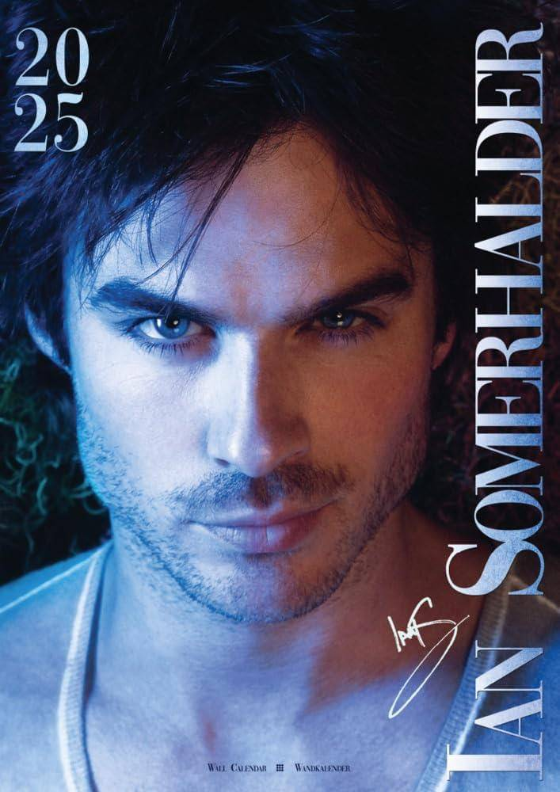

Apresentação
Ian Somerhalder é um renomado ator americano, conhecido mundialmente por seu papel como Damon Salvatore na série The Vampire Diaries. Além de ator, é um ativista ambiental apaixonado.
Carreira
Ian iniciou sua carreira como modelo aos 10 anos, viajando por cidades como Nova York, Paris e Milão. Sua carreira de ator começou a decolar após participações em séries e filmes, mas foi em 2004, com o papel de Boone Carlyle em Lost, que ganhou destaque.
Seu maior sucesso veio com The Vampire Diaries, onde interpretou Damon Salvatore, papel que lhe rendeu diversos prêmios e reconhecimento internacional.
Conquistas e Realizações
| Conquista | Ano |
|---|---|
| Melhor Ator de TV – Teen Choice Awards | 2010 |
| Prêmio de Sustentabilidade – EMA Awards | 2012 |
| Fundação Ian Somerhalder (ISF) | 2010 |
Curiosidades
- É um ativista ambiental engajado.
- Fundou a Ian Somerhalder Foundation para promover ações sustentáveis.
- É casado com Nikki Reed, atriz da saga Crepúsculo.
Influência Pessoal
Ian me inspira por sua dedicação à arte e à natureza. Seu trabalho como ator me ensinou sobre resiliência, enquanto seu ativismo me mostrou a importância de lutar por um mundo melhor.
- Inspiração para cuidar do meio ambiente
- Exemplo de disciplina profissional
- Engajamento social significativo